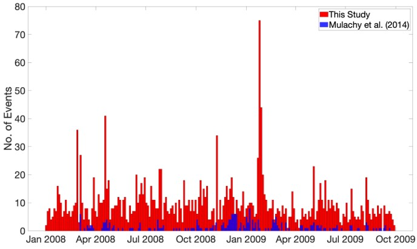

Crustal Seismicity in Southern Puna Plateau

This study investigates the relationships between seismicity, mapped faults, and volcanism in the southern Puna Plateau using 21 months of broadband and short-period seismic data recorded between January 2008 and September 2009. P and S phase picking is performed using a deep neural-network based phase picker (PhaseNet) with this continuous dataset. This method gives us approximately an order of magnitude more crustal earthquakes than previous studies. Many of the earthquakes are located near mapped faults in the region as well as underneath the volcanoes.
To better understand the relationship between the earthquakes, volcanoes, and subsurface structure, we have performed local earthquake tomography using the travel times of the earthquakes. Inversion results show low velocity anomalies close to volcanic regions in the upper and middle crust and focused seismicity near boundaries between high and low velocity anomalies.